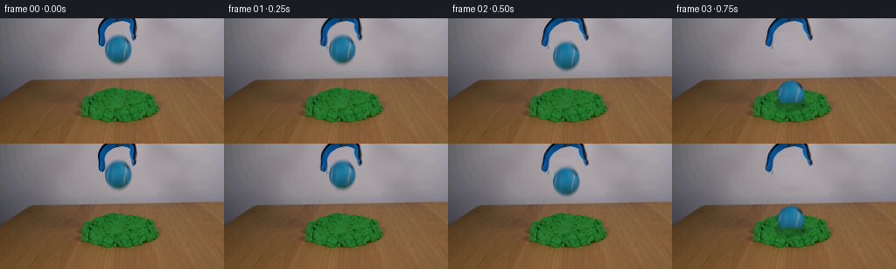
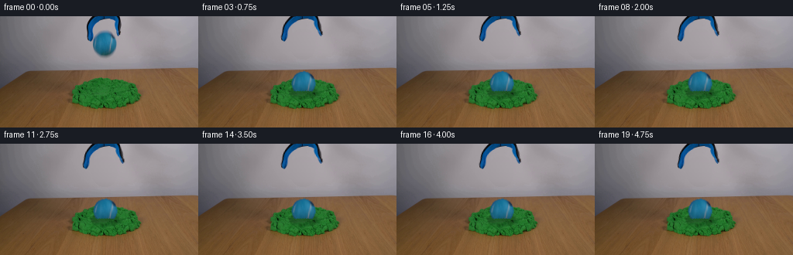
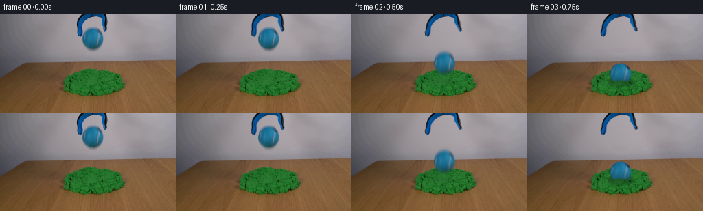

CODING AGENTS AS PIXEL WORLD MODELS
traex/GPT-6-Astra · 0017
点击播放 · 原生 RGB 像素
逐轮保存的候选
回放视频、检查图与代码变化。
每份候选均可单独播放。实际图片检查记录在下方工具轨迹中。
候选 01播放与检查图
点击播放 · 原生 RGB 像素

展开代码变化
--- 上一保存版本
+++ 本次保存版本
@@ -0,0 +1,240 @@
+"""Fixed-camera, image-based release of a tennis ball into cohesive sand.
+Only the supplied still is used for appearance. Dynamics and all mattes are analytic.
+"""
+from pathlib import Path
+import math
+import numpy as np
+from PIL import Image
+import cv2
+from scipy.ndimage import gaussian_filter, distance_transform_edt, map_coordinates
+import artifact_io
+
+ROOT = Path(__file__).resolve().parent
+I = np.asarray(Image.open(ROOT / 'first_frame.png').convert('RGB'), dtype=np.float64)
+H, W = I.shape[:2]
+Y, X = np.mgrid[:H, :W].astype(np.float64)
+CX, CY = 135.0, 35.5
+
+def smooth(a, b, x):
+ z = np.clip((x-a)/(b-a), 0., 1.)
+ return z*z*(3.-2.*z)
+
+def sample(a, xx, yy):
+ return cv2.remap(a.astype(np.float32), xx.astype(np.float32), yy.astype(np.float32),
+ cv2.INTER_LINEAR, borderMode=cv2.BORDER_CONSTANT).astype(np.float64)
+
+# The wall has a very smooth illumination gradient. Fit that gradient using
+# unobstructed wall pixels on both sides and between the fingers.
+wall = I.copy()
+for y in range(62):
+ xs = np.arange(82, 189)
+ keep = (xs < 110) | (xs > 158)
+ if y < 16:
+ # More samples in the open center of the grabber.
+ inner_l = [140,139,138,138,137,132,131,128,127,126,125,124,124,123,122,122][y]
+ inner_r = [140,139,138,138,141,144,146,146,146,146,146,146,146,146,147,147][y]
+ keep |= (xs >= inner_l) & (xs <= inner_r)
+ if y >= 56:
+ keep[:] = True
+ z = (xs[keep]-135.)/50.
+ for c in range(3):
+ p = np.polynomial.polynomial.polyfit(z, I[y, xs[keep], c], 4)
+ wall[y, 109:160, c] = np.polynomial.polynomial.polyval((np.arange(109,160)-135.)/50., p)
+# Use a vertical smoothing of the fit, not of the actual scene.
+wall_smooth = gaussian_filter(wall, (1.05, 0., 0.))
+wall[:58,109:160] = wall_smooth[:58,109:160]
+
+# Matte the blue ball separately from the two blue/black fingers. The source
+# contains a small optical blur, so use a color-difference matte at its edge.
+rho = np.sqrt(((X-CX)/15.3)**2 + ((Y-CY)/15.6)**2)
+ball_support = (X >= 119) & (X <= 152) & (Y >= 16) & (Y <= 56)
+ball_support &= ~((X <= 120) & (Y <= 31))
+ball_support &= ~((X >= 149) & (Y <= 26))
+a_ball = np.clip((wall[:,:,0] - I[:,:,0]) / np.maximum(wall[:,:,0]-26., 1), 0, 1)
+a_ball *= ball_support
+# Preserve the felt and pale curved seams as opaque material.
+a_ball = np.maximum(a_ball, ((rho < .865) & ball_support).astype(float))
+a_ball[a_ball < .018] = 0
+ball_rgb = np.where(a_ball[:,:,None] > .01,
+ (I-wall*(1-a_ball[:,:,None])) / np.maximum(a_ball[:,:,None], .01), 0)
+ball_rgb = np.clip(ball_rgb, 0, 255)
+
+# Tool silhouette includes the very thin black rim and its antialiasing.
+tool_support = (X >= 109) & (X <= 158) & (Y <= 34)
+tool_support &= (Y <= 16) | ((X <= 120) & (Y <= 34)) | ((X >= 149) & (Y <= 27))
+a_tool = np.clip((wall[:,:,0]-I[:,:,0]) / np.maximum(wall[:,:,0]-7.,1), 0, 1) * tool_support
+opaque = (I[:,:,0] < 40) & (I[:,:,2]-I[:,:,0] > 40) & tool_support
+a_tool[opaque] = 1.
+a_tool[a_tool < .025] = 0
+tool_rgb = np.clip((I-wall*(1-a_tool[:,:,None])) / np.maximum(a_tool[:,:,None], .01),0,255)
+
+# Restore wall only where an object was present. The table, sand, and all
+# other pixels are kept as photographic source pixels.
+remove = (a_ball > 0) | (a_tool > 0)
+remove = cv2.dilate(remove.astype(np.uint8), np.ones((3,3),np.uint8)).astype(bool)
+remove &= (Y < 58) & (X >= 109) & (X <= 159)
+background = I.copy()
+background[remove] = wall[remove]
+
+# For the settled sphere, trim the source's vertical blur while retaining its
+# measured felt texture and original seam. Extend material color through the
+# very narrow outer fringe to allow subpixel translations without gray halos.
+sharp_alpha = gaussian_filter((rho <= 1.).astype(float), .46)
+valid = (a_ball > .60) & (rho < 1.04)
+inds = distance_transform_edt(~valid, return_distances=False, return_indices=True)
+sharp_rgb = ball_rgb.copy()
+sharp_rgb[~valid] = ball_rgb[inds[0][~valid], inds[1][~valid]]
+# Keep measured, unmatted source colors at all reasonably covered pixels.
+blend = smooth(.22,.72,a_ball)[...,None]
+sharp_rgb = sharp_rgb*(1-blend)+ball_rgb*blend
+
+# Two asymmetrical jaws stay attached at the top, opening laterally at the tip.
+def add_tool(canvas, opening):
+ q = np.clip(Y/31.,0,1)
+ bend = q*q*(3-2*q)
+ left = (X < 137).astype(float)
+ displacement = np.where(left > .5,-6.0,6.5)*opening*bend
+ # Small real release rotation, with no motion of the fixed top attachment.
+ sx = X-displacement
+ aa = sample(a_tool, sx, Y)
+ pp = sample(tool_rgb*a_tool[...,None], sx, Y)
+ return canvas*(1-aa[...,None])+pp
+
+# Small-scale cohesive deformation and a persistent depression, not a liquid
+# splash. Original sand texture is displaced, never globally regenerated.
+sand_mask = smooth(10,38,I[:,:,1]-I[:,:,0]) * smooth(18,42,I[:,:,1]-I[:,:,2])
+sand_mask *= ((Y>=76)&(Y<=124)).astype(float)
+rng = np.random.default_rng(17106)
+noise = gaussian_filter(rng.normal(size=(H,W)), .46)
+noise_l = gaussian_filter(rng.normal(size=(H,W)), 1.2)
+impact_x, impact_y = 135.4, 97.0
+
+def sand_surface(t, canvas):
+ tau = t-IMPACT
+ if tau <= 0:
+ return canvas, np.zeros((H,W)), canvas
+ settle = 1-np.exp(-tau/0.055)
+ pulse = np.exp(-tau/.22)
+ dx, dy = X-impact_x, Y-impact_y
+ rr = np.sqrt((dx/18.0)**2+(dy/8.0)**2+1.e-6)
+ # Outward compression around the footprint, with a modest lifted lip.
+ ring = np.exp(-((rr-.98)/.29)**2)
+ push = settle*(.95+.7*pulse)
+ disp_x = push * ring * dx/18.0
+ disp_y = push * ring * dy/10.0
+ warped = sample(I, X-disp_x, Y-disp_y)
+ weight = np.clip(settle*np.exp(-(rr/1.6)**6)*sand_mask,0,1)
+ surf = canvas*(1-weight[...,None])+warped*weight[...,None]
+ bowl = np.exp(-((dx/15.7)**4+(dy/5.8)**4))
+ # Dark cavity/contact, visible mainly to either side of the sphere.
+ shadow = settle*(.26*bowl + .13*np.exp(-((rr-.89)/.16)**2)) * sand_mask
+ surf *= (1-shadow[...,None])
+ rim = np.exp(-((rr-1.13)/.16)**2)*sand_mask*settle
+ light = (-.12*dy/8.0-.055*dx/18.0+.035) * rim
+ surf += light[...,None]*np.array([47.,112.,49.])
+ surf += (rim*noise*2.6)[...,None]
+ # A few irregular cracks beside the rim are thin cohesive splits.
+ crack1 = np.exp(-((dy-(.21*dx+3.8+noise_l*.8))/.44)**2)
+ crack1 *= np.exp(-((np.abs(dx)-18.5)/4.5)**4)
+ surf *= (1-.14*settle*crack1*sand_mask)[...,None]
+ # A ragged, shallow front lip overlaps the last few pixels of the sphere.
+ # Its height increases smoothly with penetration, following the pile surface.
+ front_y = 97.1 - .8*(1-np.clip(dx*dx/(17.5**2),0,1)) + .42*np.sin(dx*1.9) + .3*noise_l
+ lip = smooth(front_y-.5,front_y+.65,Y)
+ lip *= np.exp(-(dx/17.4)**8)*sand_mask*settle
+ lip *= 1-smooth(104,108,Y)
+ return surf, lip, surf.copy()
+
+RELEASE = .44
+G = 4200.0
+CONTACT_CY = 81.8
+IMPACT = RELEASE + math.sqrt(2*(CONTACT_CY-CY)/G)
+
+def ball_position(t):
+ if t <= RELEASE:
+ return CX,CY,0.
+ if t < IMPACT:
+ return CX,CY+.5*G*(t-RELEASE)**2,0.
+ tau=t-IMPACT
+ # Sand rapidly absorbs energy: penetration, a subpixel relaxation, then rest.
+ pen = 5.4*(1-np.exp(-tau/.043))
+ relaxation = .65*(1-np.exp(-tau/.15))
+ cy=CONTACT_CY+pen-relaxation
+ cx=CX+.55*(1-np.exp(-tau/.10))
+ rot=.065*(1-np.exp(-tau/.12))
+ return cx,cy,rot
+
+def ball_layer(t):
+ cx,cy,rot=ball_position(t)
+ ca,sa=np.cos(rot),np.sin(rot)
+ sx = (X-cx)*ca+(Y-cy)*sa+CX
+ sy = -(X-cx)*sa+(Y-cy)*ca+CY
+ crisp=smooth(RELEASE,IMPACT+.12,t)
+ aa=a_ball*(1-crisp)+sharp_alpha*crisp
+ premult=ball_rgb*a_ball[...,None]*(1-crisp)+sharp_rgb*sharp_alpha[...,None]*crisp
+ return sample(aa,sx,sy),sample(premult,sx,sy)
+
+# Small heavy sand crumbs: short ballistic arcs, with permanent resting grains.
+# They are source-colored and lie close to the crater; kinetic sand is cohesive.
+particles=[]
+for k in range(18):
+ theta=rng.uniform(0,2*np.pi)
+ r=rng.uniform(13.0,19.0)
+ x0=impact_x+np.cos(theta)*r
+ y0=impact_y+np.sin(theta)*r*.40
+ vx=np.cos(theta)*rng.uniform(9,25)
+ vy=np.sin(theta)*rng.uniform(3,9)-rng.uniform(7,16)
+ lifetime=rng.uniform(.16,.32)
+ size=rng.uniform(.35,.85)
+ col=np.array([32.,102.,38.])+rng.uniform(-8,12)*np.array([.40,1.,.44])
+ particles.append((x0,y0,vx,vy,lifetime,size,col))
+
+def crumbs(canvas,t):
+ tau=t-IMPACT
+ if tau<=0:
+ return canvas
+ for x0,y0,vx,vy,life,size,col in particles:
+ tt=min(tau,life)
+ px=x0+vx*tt
+ py=y0+vy*tt+50*tt*tt
+ # A few grains remain in the existing pile rather than escaping.
+ alpha=np.exp(-(((X-px)/size)**2+((Y-py)/(size*.7))**2)*1.8)*.82
+ canvas=canvas*(1-alpha[...,None])+col*alpha[...,None]
+ return canvas
+
+def render(t):
+ out=background.copy()
+ out,lip,sand=sand_surface(t,out)
+ cx,cy,_=ball_position(t)
+ # The downward-moving shadow tightens as the ball approaches the surface.
+ if t>RELEASE:
+ height=max(0,CONTACT_CY-cy)
+ proximity=np.exp(-height/19)
+ shadow=np.exp(-(((X-cx-1.0)/(14.0+height*.07))**2+((Y-98.0)/(3.6+height*.055))**2)*1.5)
+ out*=1-(shadow*sand_mask*(.19*proximity))[...,None]
+ opening=smooth(.075,.455,t)
+ out=add_tool(out,opening)
+ # An ordinary short exposure, rather than interpolated slow motion.
+ exposure=1/100 if RELEASE<t<IMPACT else 0.
+ samples=5 if exposure else 1
+ al=np.zeros((H,W)); pm=np.zeros((H,W,3))
+ for dt in np.linspace(-exposure/2,exposure/2,samples):
+ a,p=ball_layer(t+dt)
+ al+=a/samples; pm+=p/samples
+ out=out*(1-al[...,None])+pm
+ if t>IMPACT:
+ # Sand at the front of the depression occludes the buried lower cap.
+ out=out*(1-lip[...,None])+sand*lip[...,None]
+ out=crumbs(out,t)
+ return np.uint8(np.clip(np.rint(out),0,255))
+
+frames=[I.astype(np.uint8)]
+for index in range(1,20):
+ frames.append(render(index/4.0))
+frames=np.stack(frames)
+artifact_io.save(frames,ROOT)
+assert frames.shape==(20,144,256,3)
+assert np.array_equal(frames[0],np.asarray(Image.open(ROOT/'first_frame.png').convert('RGB')))
+print('Saved 20 RGB frames, 256x144, 4 fps.')
+print('Release time:',RELEASE,'; impact time:',round(IMPACT,3))
+print('Ball centers:',[tuple(round(z,2) for z in ball_position(i/4)[:2]) for i in range(7)])
候选 02播放与检查图
点击播放 · 原生 RGB 像素


展开代码变化
--- 上一保存版本
+++ 本次保存版本
@@ -23,25 +23,15 @@
return cv2.remap(a.astype(np.float32), xx.astype(np.float32), yy.astype(np.float32),
cv2.INTER_LINEAR, borderMode=cv2.BORDER_CONSTANT).astype(np.float64)
-# The wall has a very smooth illumination gradient. Fit that gradient using
-# unobstructed wall pixels on both sides and between the fingers.
+# The wall has an almost linear horizontal illumination gradient over this
+# narrow region. Interpolation of the clean strips avoids fitting the object.
wall = I.copy()
for y in range(62):
- xs = np.arange(82, 189)
- keep = (xs < 110) | (xs > 158)
- if y < 16:
- # More samples in the open center of the grabber.
- inner_l = [140,139,138,138,137,132,131,128,127,126,125,124,124,123,122,122][y]
- inner_r = [140,139,138,138,141,144,146,146,146,146,146,146,146,146,147,147][y]
- keep |= (xs >= inner_l) & (xs <= inner_r)
- if y >= 56:
- keep[:] = True
- z = (xs[keep]-135.)/50.
- for c in range(3):
- p = np.polynomial.polynomial.polyfit(z, I[y, xs[keep], c], 4)
- wall[y, 109:160, c] = np.polynomial.polynomial.polyval((np.arange(109,160)-135.)/50., p)
-# Use a vertical smoothing of the fit, not of the actual scene.
-wall_smooth = gaussian_filter(wall, (1.05, 0., 0.))
+ left = np.mean(I[y, 107:111], axis=0)
+ right = np.mean(I[y, 158:162], axis=0)
+ z = ((np.arange(109,160)-108.5)/(159.5-108.5))[:,None]
+ wall[y,109:160] = left*(1-z)+right*z
+wall_smooth = gaussian_filter(wall, (.6, 0., 0.))
wall[:58,109:160] = wall_smooth[:58,109:160]
# Matte the blue ball separately from the two blue/black fingers. The source
@@ -61,7 +51,8 @@
# Tool silhouette includes the very thin black rim and its antialiasing.
tool_support = (X >= 109) & (X <= 158) & (Y <= 34)
-tool_support &= (Y <= 16) | ((X <= 120) & (Y <= 34)) | ((X >= 149) & (Y <= 27))
+left_boundary = np.where(Y < 29,120.,np.where(Y < 31,119.,118.))
+tool_support &= (Y <= 16) | ((X <= left_boundary) & (Y <= 32)) | ((X >= 149) & (Y <= 26))
a_tool = np.clip((wall[:,:,0]-I[:,:,0]) / np.maximum(wall[:,:,0]-7.,1), 0, 1) * tool_support
opaque = (I[:,:,0] < 40) & (I[:,:,2]-I[:,:,0] > 40) & tool_support
a_tool[opaque] = 1.
@@ -145,7 +136,7 @@
lip *= 1-smooth(104,108,Y)
return surf, lip, surf.copy()
-RELEASE = .44
+RELEASE = .37
G = 4200.0
CONTACT_CY = 81.8
IMPACT = RELEASE + math.sqrt(2*(CONTACT_CY-CY)/G)
@@ -212,7 +203,7 @@
proximity=np.exp(-height/19)
shadow=np.exp(-(((X-cx-1.0)/(14.0+height*.07))**2+((Y-98.0)/(3.6+height*.055))**2)*1.5)
out*=1-(shadow*sand_mask*(.19*proximity))[...,None]
- opening=smooth(.075,.455,t)
+ opening=smooth(.12,.39,t)
out=add_tool(out,opening)
# An ordinary short exposure, rather than interpolated slow motion.
exposure=1/100 if RELEASE<t<IMPACT else 0.
可观测工具轨迹
实际执行的命令与返回图片。
命令 1exit 0
/bin/bash -lc 'ls -la; cat prompt.txt; cat GENERATION_RULES.md'
命令 2exit 0
/bin/bash -lc "cat artifact_io.py; python - <<'PY'
from PIL import Image
import numpy as np
im=np.array(Image.open('first_frame.png'))
print(im.shape)
for y in range(0,144,8):
print(y, [tuple(im[y:y+8,x:x+8].mean((0,1)).round().astype(int)) for x in range(0,256,8)])
PY"命令 3exit 0
/bin/bash -lc "python - <<'PY'
from PIL import Image
import numpy as np
A=np.array(Image.open('first_frame.png')).astype(float)
print(' '+''.join(str(x//10%10) for x in range(104,164)))
print(' '+''.join(str(x%10) for x in range(104,164)))
for y in range(57):
row=''
for x in range(104,164):
r,g,b=A[y,x]
c=' '
if b-r>20:
c='B' if b-g>42 else ('c' if b-g>27 else 'g')
if r>85: c='.'
elif r<80: c='#' if r<45 else 'x'
row+=c
print(f'{y:02d} {row}')
print('samples')
for y in range(0,54,3):
print(y,[(x,tuple(A[y,x].astype(int))) for x in range(111,159,3)])
PY"命令 4exit 0
/bin/bash -lc "python - <<'PY'
import cv2,scipy
print('cv2',cv2.__version__)
from PIL import Image
import numpy as np
A=np.array(Image.open('first_frame.png')).astype(float)
print('Green sand mask, x=84..192, step2')
print(' '+''.join(str(x//10%10) for x in range(84,194,2)))
print(' '+''.join(str(x%10) for x in range(84,194,2)))
for y in range(75,126):
s=''
for x in range(84,194,2):
r,g,b=A[y,x]
if g-r>28 and g-b>20: c='+' if g>112 else ('g' if g>90 else '-')
elif g-r>0: c='.'
else: c=' '
s+=c
print(f'{y:03} {s}')
PY"命令 5exit 0
/bin/bash -lc "python - <<'PY'
import numpy as np
from PIL import Image
im=np.array(Image.open('first_frame.png'))
for y in [17,18,19,20,21,22,25,29,32,35,38,42,45,48,50,51,52,53]:
print('row',y,[(x,tuple(map(int,im[y,x]))) for x in range(117,154)])
PY"命令 6exit 0
/bin/bash -lc "cat > generate.py <<'PY'
\"\"\"Fixed-camera, image-based release of a tennis ball into cohesive sand.
Only the supplied still is used for appearance. Dynamics and all mattes are analytic.
\"\"\"
from pathlib import Path
import math
import numpy as np
from PIL import Image
import cv2
from scipy.ndimage import gaussian_filter, distance_transform_edt, map_coordinates
import artifact_io
ROOT = Path(__file__).resolve().parent
I = np.asarray(Image.open(ROOT / 'first_frame.png').convert('RGB'), dtype=np.float64)
H, W = I.shape[:2]
Y, X = np.mgrid[:H, :W].astype(np.float64)
CX, CY = 135.0, 35.5
def smooth(a, b, x):
z = np.clip((x-a)/(b-a), 0., 1.)
return z*z*(3.-2.*z)
def sample(a, xx, yy):
return cv2.remap(a.astype(np.float32), xx.astype(np.float32), yy.astype(np.float32),
cv2.INTER_LINEAR, borderMode=cv2.BORDER_CONSTANT).astype(np.float64)
# The wall has a very smooth illumination gradient. Fit that gradient using
# unobstructed wall pixels on both sides and between the fingers.
wall = I.copy()
for y in range(62):
xs = np.arange(82, 189)
keep = (xs < 110) | (xs > 158)
if y < 16:
# More samples in the open center of the grabber.
inner_l = [140,139,138,138,137,132,131,128,127,126,125,124,124,123,122,122][y]
inner_r = [140,139,138,138,141,144,146,146,146,146,146,146,146,146,147,147][y]
keep |= (xs >= inner_l) & (xs <= inner_r)
if y >= 56:
keep[:] = True
z = (xs[keep]-135.)/50.
for c in range(3):
p = np.polynomial.polynomial.polyfit(z, I[y, xs[keep], c], 4)
wall[y, 109:160, c] = np.polynomial.polynomial.polyval((np.arange(109,160)-135.)/50., p)
# Use a vertical smoothing of the fit, not of the actual scene.
wall_smooth = gaussian_filter(wall, (1.05, 0., 0.))
wall[:58,109:160] = wall_smooth[:58,109:160]
# Matte the blue ball separately from the two blue/black fingers. The source
# contains a small optical blur, so use a color-difference matte at its edge.
rho = np.sqrt(((X-CX)/15.3)**2 + ((Y-CY)/15.6)**2)
ball_support = (X >= 119) & (X <= 152) & (Y >= 16) & (Y <= 56)
ball_support &= ~((X <= 120) & (Y <= 31))
ball_support &= ~((X >= 149) & (Y <= 26))
a_ball = np.clip((wall[:,:,0] - I[:,:,0]) / np.maximum(wall[:,:,0]-26., 1), 0, 1)
a_ball *= ball_support
# Preserve the felt and pale curved seams as opaque material.
a_ball = np.maximum(a_ball, ((rho < .865) & ball_support).astype(float))
a_ball[a_ball < .018] = 0
ball_rgb = np.where(a_ball[:,:,None] > .01,
(I-wall*(1-a_ball[:,:,None])) / np.maximum(a_ball[:,:,None], .01), 0)
ball_rgb = np.clip(ball_rgb, 0, 255)
# Tool silhouette includes the very thin black rim and its antialiasing.
tool_support = (X >= 109) & (X <= 158) & (Y <= 34)
tool_support &= (Y <= 16) | ((X <= 120) & (Y <= 34)) | ((X >= 149) & (Y <= 27))
a_tool = np.clip((wall[:,:,0]-I[:,:,0]) / np.maximum(wall[:,:,0]-7.,1), 0, 1) * tool_support
opaque = (I[:,:,0] < 40) & (I[:,:,2]-I[:,:,0] > 40) & tool_support
a_tool[opaque] = 1.
a_tool[a_tool < .025] = 0
tool_rgb = np.clip((I-wall*(1-a_tool[:,:,None])) / np.maximum(a_tool[:,:,None], .01),0,255)
# Restore wall only where an object was present. The table, sand, and all
# other pixels are kept as photographic source pixels.
remove = (a_ball > 0) | (a_tool > 0)
remove = cv2.dilate(remove.astype(np.uint8), np.ones((3,3),np.uint8)).astype(bool)
remove &= (Y < 58) & (X >= 109) & (X <= 159)
background = I.copy()
background[remove] = wall[remove]
# For the settled sphere, trim the source's vertical blur while retaining its
# measured felt texture and original seam. Extend material color through the
# very narrow outer fringe to allow subpixel translations without gray halos.
sharp_alpha = gaussian_filter((rho <= 1.).astype(float), .46)
valid = (a_ball > .60) & (rho < 1.04)
inds = distance_transform_edt(~valid, return_distances=False, return_indices=True)
sharp_rgb = ball_rgb.copy()
sharp_rgb[~valid] = ball_rgb[inds[0][~valid], inds[1][~valid]]
# Keep measured, unmatted source colors at all reasonably covered pixels.
blend = smooth(.22,.72,a_ball)[...,None]
sharp_rgb = sharp_rgb*(1-blend)+ball_rgb*blend
# Two asymmetrical jaws stay attached at the top, opening laterally at the tip.
def add_tool(canvas, opening):
q = np.clip(Y/31.,0,1)
bend = q*q*(3-2*q)
left = (X < 137).astype(float)
displacement = np.where(left > .5,-6.0,6.5)*opening*bend
# Small real release rotation, with no motion of the fixed top attachment.
sx = X-displacement
aa = sample(a_tool, sx, Y)
pp = sample(tool_rgb*a_tool[...,None], sx, Y)
return canvas*(1-aa[...,None])+pp
# Small-scale cohesive deformation and a persistent depression, not a liquid
# splash. Original sand texture is displaced, never globally regenerated.
sand_mask = smooth(10,38,I[:,:,1]-I[:,:,0]) * smooth(18,42,I[:,:,1]-I[:,:,2])
sand_mask *= ((Y>=76)&(Y<=124)).astype(float)
rng = np.random.default_rng(17106)
noise = gaussian_filter(rng.normal(size=(H,W)), .46)
noise_l = gaussian_filter(rng.normal(size=(H,W)), 1.2)
impact_x, impact_y = 135.4, 97.0
def sand_surface(t, canvas):
tau = t-IMPACT
if tau <= 0:
return canvas, np.zeros((H,W)), canvas
settle = 1-np.exp(-tau/0.055)
pulse = np.exp(-tau/.22)
dx, dy = X-impact_x, Y-impact_y
rr = np.sqrt((dx/18.0)**2+(dy/8.0)**2+1.e-6)
# Outward compression around the footprint, with a modest lifted lip.
ring = np.exp(-((rr-.98)/.29)**2)
push = settle*(.95+.7*pulse)
disp_x = push * ring * dx/18.0
disp_y = push * ring * dy/10.0
warped = sample(I, X-disp_x, Y-disp_y)
weight = np.clip(settle*np.exp(-(rr/1.6)**6)*sand_mask,0,1)
surf = canvas*(1-weight[...,None])+warped*weight[...,None]
bowl = np.exp(-((dx/15.7)**4+(dy/5.8)**4))
# Dark cavity/contact, visible mainly to either side of the sphere.
shadow = settle*(.26*bowl + .13*np.exp(-((rr-.89)/.16)**2)) * sand_mask
surf *= (1-shadow[...,None])
rim = np.exp(-((rr-1.13)/.16)**2)*sand_mask*settle
light = (-.12*dy/8.0-.055*dx/18.0+.035) * rim
surf += light[...,None]*np.array([47.,112.,49.])
surf += (rim*noise*2.6)[...,None]
# A few irregular cracks beside the rim are thin cohesive splits.
crack1 = np.exp(-((dy-(.21*dx+3.8+noise_l*.8))/.44)**2)
crack1 *= np.exp(-((np.abs(dx)-18.5)/4.5)**4)
surf *= (1-.14*settle*crack1*sand_mask)[...,None]
# A ragged, shallow front lip overlaps the last few pixels of the sphere.
# Its height increases smoothly with penetration, following the pile surface.
front_y = 97.1 - .8*(1-np.clip(dx*dx/(17.5**2),0,1)) + .42*np.sin(dx*1.9) + .3*noise_l
lip = smooth(front_y-.5,front_y+.65,Y)
lip *= np.exp(-(dx/17.4)**8)*sand_mask*settle
lip *= 1-smooth(104,108,Y)
return surf, lip, surf.copy()
RELEASE = .44
G = 4200.0
CONTACT_CY = 81.8
IMPACT = RELEASE + math.sqrt(2*(CONTACT_CY-CY)/G)
def ball_position(t):
if t <= RELEASE:
return CX,CY,0.
if t < IMPACT:
return CX,CY+.5*G*(t-RELEASE)**2,0.
tau=t-IMPACT
# Sand rapidly absorbs energy: penetration, a subpixel relaxation, then rest.
pen = 5.4*(1-np.exp(-tau/.043))
relaxation = .65*(1-np.exp(-tau/.15))
cy=CONTACT_CY+pen-relaxation
cx=CX+.55*(1-np.exp(-tau/.10))
rot=.065*(1-np.exp(-tau/.12))
return cx,cy,rot
def ball_layer(t):
cx,cy,rot=ball_position(t)
ca,sa=np.cos(rot),np.sin(rot)
sx = (X-cx)*ca+(Y-cy)*sa+CX
sy = -(X-cx)*sa+(Y-cy)*ca+CY
crisp=smooth(RELEASE,IMPACT+.12,t)
aa=a_ball*(1-crisp)+sharp_alpha*crisp
premult=ball_rgb*a_ball[...,None]*(1-crisp)+sharp_rgb*sharp_alpha[...,None]*crisp
return sample(aa,sx,sy),sample(premult,sx,sy)
# Small heavy sand crumbs: short ballistic arcs, with permanent resting grains.
# They are source-colored and lie close to the crater; kinetic sand is cohesive.
particles=[]
for k in range(18):
theta=rng.uniform(0,2*np.pi)
r=rng.uniform(13.0,19.0)
x0=impact_x+np.cos(theta)*r
y0=impact_y+np.sin(theta)*r*.40
vx=np.cos(theta)*rng.uniform(9,25)
vy=np.sin(theta)*rng.uniform(3,9)-rng.uniform(7,16)
lifetime=rng.uniform(.16,.32)
size=rng.uniform(.35,.85)
col=np.array([32.,102.,38.])+rng.uniform(-8,12)*np.array([.40,1.,.44])
particles.append((x0,y0,vx,vy,lifetime,size,col))
def crumbs(canvas,t):
tau=t-IMPACT
if tau<=0:
return canvas
for x0,y0,vx,vy,life,size,col in particles:
tt=min(tau,life)
px=x0+vx*tt
py=y0+vy*tt+50*tt*tt
# A few grains remain in the existing pile rather than escaping.
alpha=np.exp(-(((X-px)/size)**2+((Y-py)/(size*.7))**2)*1.8)*.82
canvas=canvas*(1-alpha[...,None])+col*alpha[...,None]
return canvas
def render(t):
out=background.copy()
out,lip,sand=sand_surface(t,out)
cx,cy,_=ball_position(t)
# The downward-moving shadow tightens as the ball approaches the surface.
if t>RELEASE:
height=max(0,CONTACT_CY-cy)
proximity=np.exp(-height/19)
shadow=np.exp(-(((X-cx-1.0)/(14.0+height*.07))**2+((Y-98.0)/(3.6+height*.055))**2)*1.5)
out*=1-(shadow*sand_mask*(.19*proximity))[...,None]
opening=smooth(.075,.455,t)
out=add_tool(out,opening)
# An ordinary short exposure, rather than interpolated slow motion.
exposure=1/100 if RELEASE<t<IMPACT else 0.
samples=5 if exposure else 1
al=np.zeros((H,W)); pm=np.zeros((H,W,3))
for dt in np.linspace(-exposure/2,exposure/2,samples):
a,p=ball_layer(t+dt)
al+=a/samples; pm+=p/samples
out=out*(1-al[...,None])+pm
if t>IMPACT:
# Sand at the front of the depression occludes the buried lower cap.
out=out*(1-lip[...,None])+sand*lip[...,None]
out=crumbs(out,t)
return np.uint8(np.clip(np.rint(out),0,255))
frames=[I.astype(np.uint8)]
for index in range(1,20):
frames.append(render(index/4.0))
frames=np.stack(frames)
artifact_io.save(frames,ROOT)
assert frames.shape==(20,144,256,3)
assert np.array_equal(frames[0],np.asarray(Image.open(ROOT/'first_frame.png').convert('RGB')))
print('Saved 20 RGB frames, 256x144, 4 fps.')
print('Release time:',RELEASE,'; impact time:',round(IMPACT,3))
print('Ball centers:',[tuple(round(z,2) for z in ball_position(i/4)[:2]) for i in range(7)])
PY
python generate.py
ls -lh pixels.npz index.html frames/00.png frames/19.png"命令 7exit 0
/bin/bash -lc "python - <<'PY'
import numpy as np
from PIL import Image
A=np.array(Image.open('first_frame.png')).astype(float)
B=np.array(Image.open('frames/19.png')).astype(float)
D=np.max(abs(A-B),axis=2)
print('Change stats', np.mean(D),np.sum(D>10))
for y in range(0,61,3):
print(y,' '.join(f'{int(B[y,x,0]):3d}' for x in range(106,164,2)))
print('final blue boundary per row')
for y in range(59,106):
blue=(B[y,:,2]-B[y,:,0]>40)&(B[y,:,2]-B[y,:,1]>15)
xs=np.where(blue)[0]
if len(xs):print(y,int(xs.min()),int(xs.max()),len(xs))
print('unchanged bg',np.max(abs(A[:,0:90]-B[:,0:90])))
print('all changes bbox',np.where(D>1)[1].min(),np.where(D>1)[1].max(),np.where(D>1)[0].min(),np.where(D>1)[0].max())
PY"命令 8exit 0
/bin/bash -lc "python - <<'PY'
p='generate.py'
s=open(p).read()
a=s.index('# The wall has')
b=s.index('# Matte the blue',a)
s=s[:a]+'''# The wall has an almost linear horizontal illumination gradient over this
# narrow region. Interpolation of the clean strips avoids fitting the object.
wall = I.copy()
for y in range(62):
left = np.mean(I[y, 107:111], axis=0)
right = np.mean(I[y, 158:162], axis=0)
z = ((np.arange(109,160)-108.5)/(159.5-108.5))[:,None]
wall[y,109:160] = left*(1-z)+right*z
wall_smooth = gaussian_filter(wall, (.6, 0., 0.))
wall[:58,109:160] = wall_smooth[:58,109:160]
'''+s[b:]
s=s.replace('tool_support &= (Y <= 16) | ((X <= 120) & (Y <= 34)) | ((X >= 149) & (Y <= 27))','''left_boundary = np.where(Y < 29,120.,np.where(Y < 31,119.,118.))
tool_support &= (Y <= 16) | ((X <= left_boundary) & (Y <= 32)) | ((X >= 149) & (Y <= 26))''')
s=s.replace('RELEASE = .44','RELEASE = .37').replace('opening=smooth(.075,.455,t)','opening=smooth(.12,.39,t)')
open(p,'w').write(s)
PY
python generate.py
python - <<'PY'
from PIL import Image
import numpy as np
from pathlib import Path
orig=np.asarray(Image.open('first_frame.png'))
f=np.stack([np.asarray(Image.open(f'frames/{i:02}.png')) for i in range(20)])
assert f.dtype==np.uint8 and f.shape==(20,144,256,3)
assert np.array_equal(f[0],orig)
p=np.load('pixels.npz')['pixels']
assert p.shape==(144,256,20)
assert np.array_equal(p[:,:,0],(orig[:,:,0].astype(np.uint32)<<16)|(orig[:,:,1].astype(np.uint32)<<8)|orig[:,:,2])
print('Verified artifact sizes, RGB format, 20 frames, and exact first frame.')
print('Consecutive changed pixels', [int(np.any(f[i]"'!=f[i-1],axis=2).sum()) for i in range(1,20)])
print('"'Artifacts:', ', '.join(str(x) for x in Path('.').glob('*') if x.name not in ['first_frame.png','prompt.txt','GENERATION_RULES.md','artifact_io.py','player_template.html']))
PY"保存候选 2 份；完成命令 8 次；可验证图片返回 0 张。原始 API 响应与完整日志保留在本地。